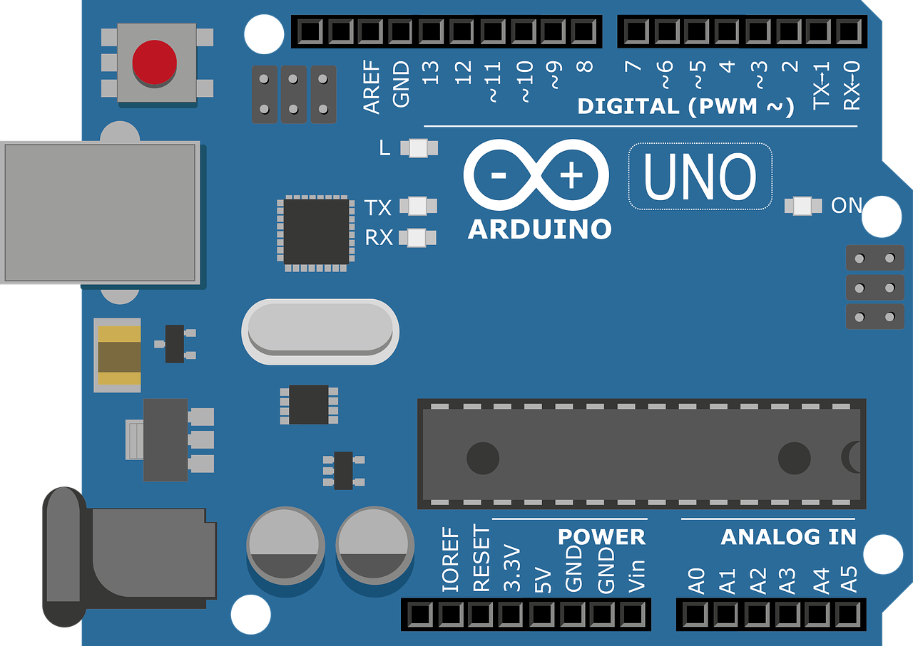

Per gestire il nostro contatore d'acqua abbiamo utilizzato una scheda Arduino Uno, che ci constente di collegare i vari componenti ad essa e dirigerli attraverso un codice apposito.
Alla scheda Arduino Uno abbiamo collegato due componenti: un contatore d'acqua ed uno schermo LCD 16x2 per poter leggere e restituire la quantità di acqua utilizzata.
Per sapere più informazioni sul funzionamento, andare su Software.